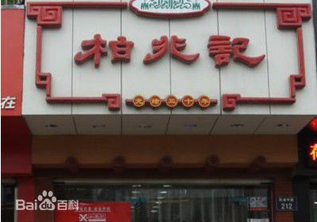

| 安庆 |
|
【江毛水饺】
江毛水饺是安徽安庆地区一种沿江风味的汉族传统名吃，名为水饺，实为馄饨。饺馅选料是用山区的黑毛猪后腿肉，佐以虾仁、榨菜制作，用纯鸡汁或骨头汤煮饺，具有皮薄、肉嫩、汤鲜独特风味，深得人们喜爱。因其创始人江庆福颈上有一撮白毛，绰号“江毛”，故称“江毛水饺”。已有80余年制作历史，现被安徽省旅游局列为“地方风味小吃”。
“江毛水饺”的创制人江庆福，于清光绪年间在安庆小南门一带，挑担卖水饺。这种水饺用料选用山区黑猪后腿肉，佐以虾仁，榨菜制馅，用炖鸡汁或骨头鸡煮饺，具有皮薄、肉嫩、汤鲜的独特风味。因江庆福颈上长有一撮白毛，绰号“江毛”，故有“江毛水饺”名号。民国3年（1914）开设“江万春”水饺店，子孙承业，经营久盛不衰
据史料记载，清朝光绪年间，安庆桐城罗家岭人江庆福以经营水饺为业，走街串巷叫卖。其制作的水饺因配料精细，做工独特，口味鲜美而 蜚声于安庆古城南的三步两桥（今建设路）一带。江庆福别名江毛，于是，世人便称其制作的水饺为江毛水饺。江毛水饺状如猫耳，馅如珍珠，皮薄如纸，汤鲜味醇。 【柏兆记】
“柏兆记”是清末柏绍卿创牌的专营清真名糕细点的老店，始建于1904年，是目前安徽省唯一一家专业加工生产清真食品的企业。 经过1979年、1990年两次整合，在安庆市人大、财委、民委、商业局四部门的关心支持下，建成了安庆市清真柏兆记食品厂。为了适应市场 经济的快速发展，2003年8月安庆市食品厂重组，建成了一家股份制公司：“安庆市柏兆记工贸实业发展有限公司”。公司注册资金500万元 。主要经营：糕点生产、销售及糖酒、服装等。员工近百人，拥有固定资产及设备近1000万元。 公司食品糕点年产销量达2000多万元，主要 生产多种带有浓郁的伊斯兰教风味的产品，做工考究，原料优良，品种繁多，尤以月饼、八宝绿豆糕、墨子酥、贡糕、广细点等为著名。其 中作为安庆特产的“柏兆记清真墨子酥”还深受北京及海内外人士的喜爱，该产品营养丰富、乌须黑发、香浓味甜、滋润肺嗓、是茶余饭后 及馈赠亲友的最佳佐餐滋补品。 我们拥有传统的手工生产工艺，也拥有国内一流的生产设备，还拥有一支高效率、高素质的生产队伍和销售 精英。销售网络不仅仅遍布安庆，而且也遍布长江中下游。在长江中下游享有一定的声誉。
其创始人柏绍卿从一根扁担开始，一炉饼、一壶浆、沐清风、踏明月，朴实诚毅。最终成就了百年品牌“柏兆记” 。“柏兆记”的中秋月饼是“柏兆记”拳头产品，皮薄馅靓、口感滋润柔软、品味高尚、质量上乘。历史成就品牌，今天的柏兆记成为安庆食品行业一颗靓丽的奇葩，为安庆的百姓购买高档糕点、美食消遣提供了各种丰富的选择。 【天柱剑毫】
天柱剑毫产于安徽省潜山县天柱山一带，属绿茶类。 天柱剑毫以其优异的品质、独特的风格、峻峭的外表已跻身于全国名茶之列，因其外形扁平如宝剑而得名。 天柱山制茶历史悠久，唐代著名茶典《膳夫经手录》就有记载：“舒州天柱茶，峻拔遒劲，甘香醇美”。天柱剑毫多产自海拔500米以上的深山之中，茶叶因常年受云霭浸漫，为淑气所钟，不用熏焙自然清香。每年谷雨前后茶农开始采摘新茶，由于均选用“一芽一叶”，因而产量有限。取少许置于杯中，用开水冲泡，只见茶叶徐徐伸展，汤色碧绿，香气袭人，入口甘醇。 “奇峰出奇云，秀木含秀气，清晏皖公山，f绝称人意”（唐代李白《江上望皖公山》）。天柱山雄奇灵幽，巍峨秀丽，是江淮大地的第一名山，唐代道教称之为“第十四洞天”，自古以来为游览胜地。天柱茶也久享盛名。 天柱山位于安徽省潜山县城之西北。群峰之巅，耸拔千仞，如“孤立晴霄，中天一柱”，海拔1485公尺，天柱山因此得名。 天柱山历有潜山、皖山、皖公山、万岁山诸名。天柱峰深踞群山之中，峰顶拔尖，故称“潜（尖）山”。西周时天柱山一带册封过一个由皖伯作领主的皖国，故改为“皖山”，皖，原有美好、明媚的意思，安徽省简称为皖，亦由来于皖山、皖水。相传皖伯执政时，体察民情，施以德政，后人为纪念他，又改皖山为“皖公山”。旧传，汉元封五年（公元前106年）冬，汉武帝南巡，亲临皖山设台祭岳，百姓高呼万岁，故也有“万岁山”之称。后来汉宣帝又敕封天柱山为“南岳”，从此名声远扬。至于湖南的南岳衡山则是以后的事了。
天柱剑毫采摘期一般在4月5日至4月25日，按照1芽1叶的标准进行分期分批采摘。鲜叶分1芽1叶初展、1芽1叶开展、1芽2叶初展3个等级。天柱剑毫于清明后开园采摘，选择阴天或晴天上午11时前、下午3时后采叶，采摘标准为一芽一叶初展，要求芽头肥壮、匀齐、多毫、节间短，色泽黄绿。
制茶分摊青、杀青、炒坯、提毫、初烘、复烘、足烘、拣剔整形、包装等工序。天柱剑毫制造分杀青、做形、提毫、烘焙四道工序。 【墨子酥 】
墨子酥，安徽安庆市闻名的一种汉族传统糕点，起源于清末，因成品色泽乌黑，油润细腻，香甜浓郁，形如古墨而得名。主要原料是上等黑芝麻、小磨麻油、精细白糖等多种原料。
主要原料是上等黑芝麻、小磨麻油、精细白糖等多种原料。
安庆糕点名坊“麦陇香”的传统特产。制作须经过九道工序，精心配料。主要原料是上等黑芝麻、小磨麻油、精细白糖等。产品形同乌墨，油而不腻，香甜爽口，具有润肺补肾利肝等功效，老少皆宜。曾获商业部优质产品奖和安徽省优质产品奖。
柏兆记，墨子酥，百年老店“柏兆记”始建于1904年，其创始人柏绍清从一根扁担开始，一炉饼、一壶浆,沐清风、踏明月，朴实诚毅。作为安庆特产的“柏兆记清真墨子酥”是我清真百年老店的传统优质产品之一;该产品采用优质纯黑芝麻、绵白糖、小磨麻油等多种原料，由名师操作，配料严谨，质量考究，该产品营养丰富、乌须黑发，香浓味甜，滋肺润嗓，止咳平喘。 |